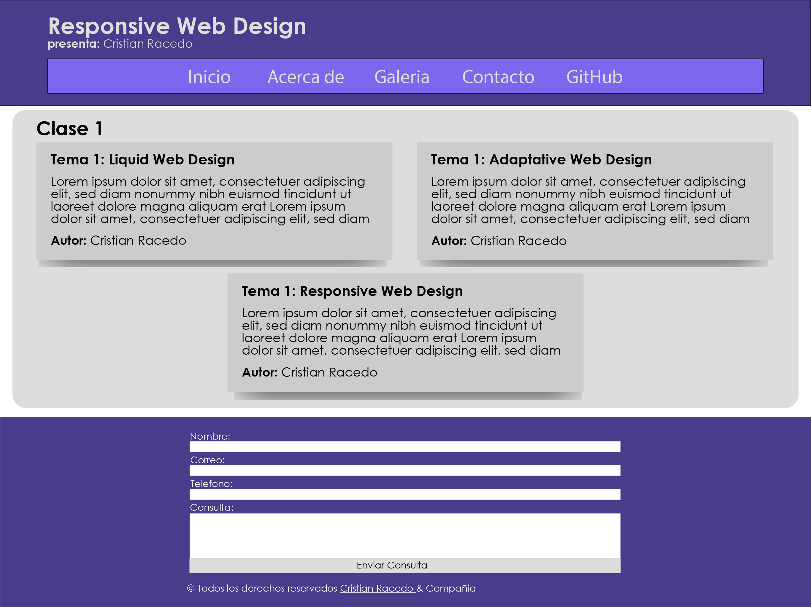
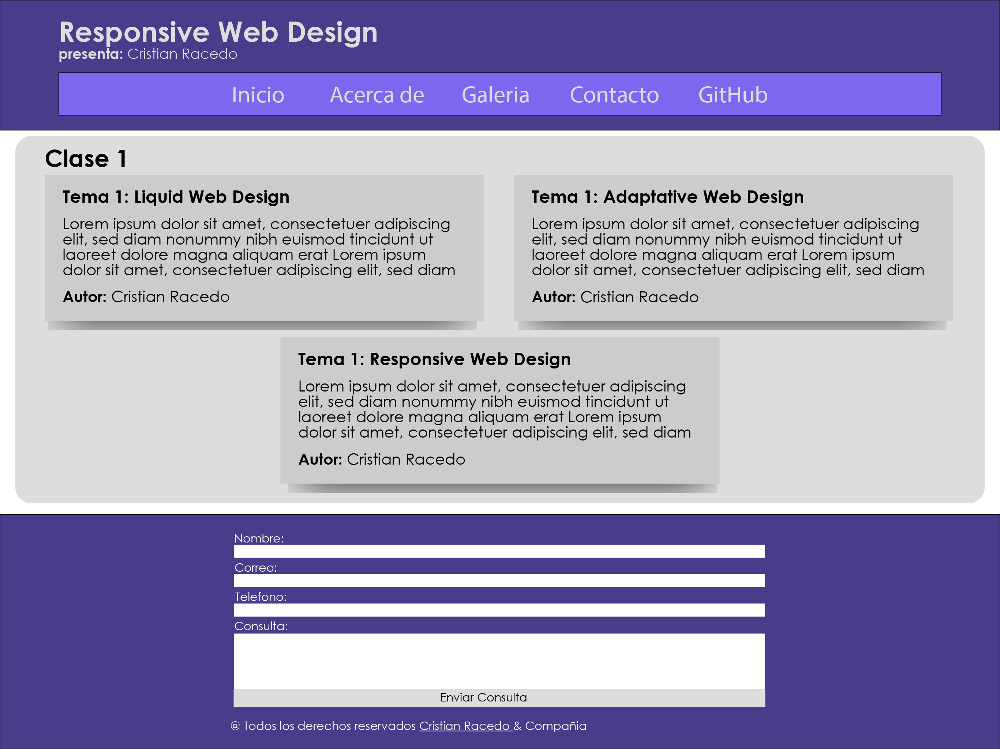

Utiliza porcentajes o ems en lugar de pixeles, para que los elementos se adapten según el ancho de la pantalla. Si bien el resultado puede parecer atractivo en pantallas medianas, como computadoras y tablets, se producen muchos problemas en pantallas grandes y pequeñas. Por ejemplo, en televisores las imágenes se estiran mucho y en teléfonos los textos son difíciles de leer.
Como una forma de evitar errores, se puede fijar un ancho máximo y mínimo. El problema es que esto hace que aparezcan áreas en blanco en pantallas grandes y barras de desplazamiento horizontal en las más pequeñas.
col-12
(100%)
col-1
(8.3%)
col-2
(16.6%)
col-3
(25%)
col-6
(50%)
col-4
(33.3%)
col-8
(66.6%)
col-5
(41.6%)
col-7
(58.3%)
Tema 2: Adaptive Web Design
Usa plantillas estáticas basadas en puntos de quiebre, Cuando la pantalla alcanza cierto límite de tamaño, se cambia a otro diseño.
Por ejemplo, puedes diseñar una página en tres dimensiones diferentes. Cuando un usuario visite tu sitio, los archivos adaptativos detectarán el aparato que está usando y mostrarán la plantilla adecuada.
Esta aproximación podría funcionar mejor para clientes con un presupuesto reducido, ya que implica sólo desarrollar las plantillas para algunas pantallas, en vez de planificar una experiencia óptima a través de ellas. Sin embargo, ofrece un bajo nivel de usabilidad y muestra una versión reducida de los contenidos en móviles, un medio que crece con fuerza y gana cada vez más relevancia.
width: 576px (fixed)
 width: 768px (fixed)

width: 768px (fixed)

Tema 3: Responsive Web Design
En el responsive web design el diseño y el contenido se adaptan a cada pantalla, entregando una experiencia de usuario muy similar en resoluciones bajas, altas o en formatos de distintas pulgadas.
Para lograr esto, los contenidos se ordenan en bloques que se reorganizan según las características de la pantalla y el navegador que se utiliza. Las partes y la jerarquía de los elementos se definen según una serie de parámetros, entre ellos:
- Ancho y alto de la ventana del navegador.
- Orientación del dispositivo.
- Proporción entre el alto y ancho de la pantalla.
- Resolución del dispositivo, es decir, la precisión del detalle en las imágenes de mapa de bits.
De esta forma el usuario ve una diagramación distinta en cada dispositivo, pero aún así puede acceder a todos los contenidos. La información se mantiene igual, pero su presentación se optimiza según el aparato y el navegador usado.
Tema 1: Unidades Relativas
Son aquellas que tienen en cuenta el contexto donde se encuentran, son relativas a las dimensiones del contenedor donde se han definido. Por ejemplo %, es una unidad relativa, puesto que 30% de ancho no será lo mismo para un elemento situado dentro de un contenedor de 2000px de anchura o sobre un contenedor de 1000px de anchura.
- %: porcentaje
- em: Ancho de la fuente para la letra "M"
- rem: em basado en la fuente del Navegador
- ex: Altura de la fuente para la letra "x"
- ch: Anchura del carácter "0" (cero)
Lo interesante aquí es que, para el caso de las dimensiones de los elementos, podemos especificar las anchuras o alturas relativas tanto en em como en %. Si usas em serán relativas al tamaño de texto y si usas % serán relativas al tamaño del contenedor, llegando a fórmulas distintas:
-
Valor % = ( dimensión objetivo / dimensión contenedor ) x 100
-
Valor em = ( dimensión objetivo / fuente contenedor )
- Front-End
- HTML
- CSS
- JS
- Angular
- Bootstrap
- ReactJS
- VueJS
-
Back-End
- SQL
- MySQL
- Oracle SQL Server
- Microsoft SQL Server
- PHP
- JAVA
- RUBY
- PYTHON
Tema 2: Unidades Absolutas
Son aquellas que especifican una medida en términos absolutos, sin tener en cuenta el contexto donde se están aplicando. Por ejemplo 300px (300 píxeles) es algo bastante fijo, que tendrá un valor independientemente de dónde se haya definido. 300px son siempre eso, 300px, independientemente de si tu contenedor tiene una anchura de 2000px o de 500px.
- px: Píxeles
- in: Pulgadas (1 in es igual a 96px)
- pt: Puntos (1 pt es igual a 1/72 in)
- cm: Centímetros
- mm: Milímetros
- pc: Picas
En muchos de los casos cuando decimos 300px en CSS corresponde con 300 puntos en la pantalla, pero no es siempre así pues habría que discutir acerca de pantallas con mayor densidad de píxeles, como las pantallas retina. En determinadas pantallas un px de CSS no tiene siempre que corresponder con un punto en la pantalla, pero no nos vamos a meter todavía en ello.
- Front-End
- HTML
- CSS
- JS
- Angular
- Bootstrap
- ReactJS
- VueJS
-
Back-End
- SQL
- MySQL
- Oracle SQL Server
- Microsoft SQL Server
- PHP
- JAVA
- RUBY
- PYTHON
Tema 3: Unidades Flexibles (Viewport)
El viewport del navegador es el área de la ventana en donde el contenido web está visible. Generalmente no es del mismo tamaño que la página renderizada, en donde se brindan barras de desplazamiento para que el usuario pueda acceder a todo el contenido.
Dispositivos con pantallas angostas muestran la página en una ventana virtual o viewport, que es usualmente más ancho que la pantalla y la comprimen de manera que pueda verse completa. El usuario podrá recorrerla y hacer zoom para ver diferentes áreas de la página.
- vw: Ancho del viewport del navegador
- vh: Altura del viewport del navegador
- vmin: Unidad minima del viewport (ancho o alto)
- vmax: Unidad maxima del viewport (alto o ancho)
Por ejemplo, si una pantalla móvil tiene un ancho 640px, las páginas pueden ser procesadas con un viewport de 980px, y después comprimidas para que entren en 640px.
Esto se hace porque muchas páginas no están optimizadas para dispositivos móviles y se quiebran (o, al menos, se ven mal) cuando son procesadas a un ancho de viewport pequeño. El viewport virtual es una forma de resolver el problema de sitios no optimizados para móviles, logrando que se vean mejor.
- Front-End
- HTML
- CSS
- JS
- Angular
- Bootstrap
- ReactJS
- VueJS
-
Back-End
- SQL
- MySQL
- Oracle SQL Server
- Microsoft SQL Server
- PHP
- JAVA
- RUBY
- PYTHON